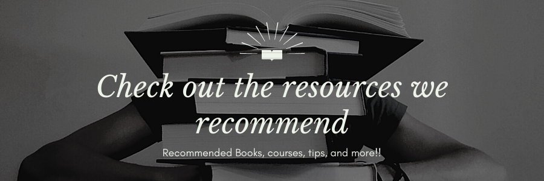

Posted on January 1, 2021 at 12:00 PM
All the advice here is based on my own experience and this is definitely not the only way to crack the SAT. I have spent a lot of time and dedication preparing for this exam, and my thoughts are solely for helping you reach your dream score through what worked for me and many others.
Contents
I’m not one of those naturally high scorers. My PSAT score in 10th grade was a 1240. After spending months of preparation, I’ve finally gotten my highest combined score to 1530. I mainly struggled on the English section and breezed through the math section which is the easiest or most masterable section for most people. For all those out there who struggle in English and breeze through the math, this is the resource page for you!! This article is primarily intended for students in the 1100-1400s range. If I was able to turn my score around, there is no reason why you can’t. This article will go through the preparation process. Here are two drop down buttons where you can find a summary and a table of contents. This will help you read the condensed info if you’re short on time. I’m not one of those naturally high scorers. My PSAT score in 10th grade was a 1240. After spending months of preparation, I’ve finally gotten a 1560. I mainly struggled on the English section and breezed through the math section which is the easiest or most masterable section. For all those out there who struggle in English and breeze through the math, this is the resource page for you!! This article is primarily intended for students in the 1100-1400s range. If I was able to turn my score around, there is no reason why you can’t. This article will go through the preparation process and outline the general steps you need to take in order to be successful.
Depending on the hours you spend per day and your starting score, the amount of time needed to prepare will differ from person to person. Generally, to maximize your score in math, one month should be plenty to cover all the topics and go through enough practice problems. As for the English section, this requires more time. If you’re scoring anywhere in the 500-600 range, I recommend preparing for at least 3 months if you intend to reach the 700 mark. If you’re already scoring somewhere in the 600-700 range, I recommend ~2 months of preparation. You can find many good study tables and prep routines online such as here
In the linked video, Kelly goes through her SAT study routine, but her schedule was during school. My recommendation is to spend the summer before junior year preparing if you have a low score. That way you can really understand the ins and outs of the test, and possibly get some real experience in the October, November, and Decembers dates. This approach is really beneficial because you won’t feel the pressure some of the seniors feel when their test date is the last one before college apps.
You need to gather the proper resources. First and foremost, you need REAL, college board exams. They offer 10 real, past administered tests on their website However, I recommend buying their official book with the tests because It’s better to attempt the tests on paper vs digitally. It does matter, your speed increases, and you need to simulate real testing conditions. You need to gather the proper resources. First and foremost, you need REAL college board exams. They offer 10 real, past administered tests on their website However, I recommend buying their official book with the tests because It’s better to attempt the tests on paper vs digitally. It does matter; your speed increases and you need to simulate real testing conditions.
Additionally, r/SAT subreddit group has several more real, past administered practice exams. Another resource is the past administered PSAT exams.
You also need the right mentorship or books to get you through all of this. Check out my article on Top SAT resources to learn about the books and courses I used. I provide relatively cheap and free resources, and there are many online pdfs to these books as well.
If you notice, I might mention books that aren't as famous as the usual Barrons or PrincetonReview. The reason for this is that most prep books out there don't provide accurate questions that resemble the real SAT questions. Always go for quality over quantity. Most of the questions you do should come from the real tests unless you are learning content. Practice tests from other companies don't mean much and aren't going to help significantly.
The #1 way to prepare for this test is to do as many real tests as possible, understand every single question, and start building an intuition for the pattern types. I recommend going over questions that you got right, but still were unsure about. You need to become confident in each answer choice. Majority of the books and coureses I recommend focus on helping you understand questions from the real tests.
Additionally, don't work on strengthing your strong points, always work on your weak points first. If you're good at math and easily get -2 or -1, study for that English section where you miss 8 questions first. It feels good to work on something you're already good in, but it doesn't help you improve your score as much.
You'll often hear me repeat below about understanding your mistakes, but often times this is hard to implement correctly. I recommend that you keep track of every question that you were unsure of or got wrong, but DON'T mark the right answer. Once you finish this, go back to the questions you missed, and reread the passage. The BEST way to learn from your mistake is by figuring out the right answer by yourself vs seeing an explanation. There is always a reason you got a question wrong: silly mistake, weak passage comphrension, misunderstanding in the passage, unfamiliarity with grammar rule, or the "two answers left and I couldn't decide" mistake which is actually an inability to properly eliminate answer choices. I assure you that once you start going through the tests like this, you will gradually improve. For example, I used to be weak on Fiction passages and evidence question types, but I saw a pattern emerge with fiction passages and knew exactly what to look for. For the evidence questions I read the Erica Meltzer Reading Guide and did 20+ evidence questions and learned strategies such as matching up choices between the evidence the and the paired question.
Simply taking the tests isn't enough, the most important part of your preparation will be seeing the patterns in the test and avoiding past mistakes.
Here is an example to prove my point. Let's say you haven't studied grammar yet and get this sentence in the grammar section:
The ball, in addition to the frisbee,(was/were) taken away.
Normally, you have learned the grammar rule to match subject and verbs. So since it's a ball and frisbee, the answer is "were" right? No. This is a classic example of one of many tricks that the SAT has to knock easy points off your score. The words in between two commas are usually non-essential clauses on the SAT, meaning you can pretend they don't exist: The ball(was/were) taken away. The answer is "was." If you got this question wrong right now, I assure you that since you went through the process of understanding why, you won't miss it again.

Numerous guides and good advice available from Reddit, Prepscholar and CollegePanda
Besides these tips, the #1 method to improve your reading score is to do every single passage that was real, administered, and to truly UNDERSTAND why you got it wrong, what that question was testing, and how you can avoid making the same mistake again. This advice seems obvious, but many fail to implement it. You need to understand the passage, where the answers lie, what was the most efficient way to solve it. Now there are two crucial resources for this. Since college board explanations don’t explain much, you should refer to the Black Book, which contains deeper explanations on why choices are right or wrong. An even better place is 1600.io. The instructor, George, gives video explanations on every single question and a walkthrough on every single passage. He spends great time on these, often ~7min explanations for just one question, but this is great for understanding and improving. After a certain amount of practice tests, ~6-7, you should have some intuition on the questions; you’ll start recognizing patterns and categories of questions based on the genre of the passage.
A good approach is to be as objective and logical as possible. The answers have to be objectively correct otherwise there would be lawsuits. Each answer has a definitive reason why it must be correct and each wrong answer choice has a definitive reason to be wrong. After enough practice, you will observe concrete patterns that will help you score higher. Try to look for reasons an answer choice might be wrong. Even if it’s a subtle reason, it’s good enough. You will learn tricks within the test. For example: there are 4 passage types: Fiction, Socical Science, Science, and History. In the Fiction passages, you are usually asked about character relationships, character growth, etc. In Science you are usually given an experiment, or a study, and asked questions about those that are more about understanding what the experiment was about. The history passages are usually the hardest because of their older English style, but it’s important to translate line by line and understand the main idea. Once you generally understand the idea, you should be able to ace the questions because they all rely on that.
Questions can be broken into categories such as:
These were simply a few examples of the way the test is structured. After a complete course, or book from the resource page , you should be able to get under -10 on the Reading.
I highly recommend reading Erica Meltzer and College Panda from the resources page(). These books go through content and rules you need to know, common ways the test tries to trick you, and practice questions. These are realistic questions that help you on the real test. Now, even in the English section, there are two types of questions: pure grammar and comprehension. After studying the grammar rules and practicing, you should be able to cut your mistakes to ~1-2 in the pure grammar questions.
The comprehension part is the hardest in my opinion because there is no definitive way to solve them. They are like the reading comprehension section. These have subcategories: word-choice, paragraph-order, sentence addition and deletion. Now to combat these questions, you need a solid understanding of the passage you are reading. Sometimes the problem that happens is since we are looking for grammar mistakes, we don’t understand the passage as much. To tackle this, I went through the test doing only grammar questions, and then read the passages for the comprehension questions. It may seem like a bad method for re-reading the passage, but really you aren’t reading the passage when doing the grammar questions, and sometimes it saves time by not struggling to switch between grammar and comprehension, so give it a try!
The math section tests basic concepts, many of which are from Algebra I, Geometry, and some statistics. These problems are given as word problems, so make sure you have strong fundamentals; if you miss over 5 questions, I recommend the College Panda book because you have a knowledge gap at that point. If you miss below 5, keep doing practice problems and learning from your mistakes. This is the easiest section to master, and if you are getting 4-5 wrong, there is absolutely no reason why you can’t improve to -0 or -1.
Even if you think you’re bad at math, don’t worry. There are literally question banks and the same type of questions repeat over and over again. I’ve seen students weak in math get 800 on the SAT just because they memorized and went through all the questions available through the links I had at the beginning. There are many calculator tricks as well.
Sometimes, this test is really about the perfect day. Maybe you are just having a bad day. Maybe you were very nervous during your first reading passage. Maybe the passages were your weak ones. Maybe the test was too hard or you just messed up. Many of my 1500+ scoring friends didn't get 1500+ on their first attempt. One friend got 670, 690, 740 for his 1st, 2nd, and 3rd attempts on the English section. As you can see, there is an improvement, and the reality is that he got this highest score on the 3rd attempt because everything on the test was perfect for him and he was very very relaxed.
Anxiety often gets to many of us during the first sitting, but by the second or third date you become used to it and have a clearer mind. This is often why it's recommended to take full length tests on paper, timed at home to simulate the real test conditions.
Lastly, many people recommend to not take the SAT more than 3 times, and this advice is mostly accurate. Taking the exam more than 3 times just shows you're just trying to get luck or wasting time on these tests. Although, you do have the ability to use score choice. If you aren't seeing any postitive trend at all, then you've prepared in the wrong manner. The practice tests you take at home are REAL. So treat each one like it. There are schools that require ALL your test scores, such as Yale or CMU. But just prepare in the right manner, if you're hitting near a 30 point range of your target score on practice tests, you should be able to get it within 3 attempts.
Sometimes students get discouraged from not seeing a growth trend. If you aren’t seeing a growth trend when you are in the 1200-1390 range, that means you aren’t learning enough content to fill your knowledge gap. It’s most common to see students in the 1400 range struggle to get to the 1500 range. That was where I ended up having trouble as well because at this point, it’s not about knowledge, but about truly knowing the ins and outs of the test and cutting down on mistakes. Tests have different difficulties and scales. They are intended to be equal for each test, but for you individually they might differ. Don’t get demotivated by a few lower scores than usual. Instead, look and UNDERSTAND those mistakes and continue your preparation. One day, you WILL get your dream score if you preparation was genuine.
You can find recent curves at CollegePanda
If you want to understand what resources worked for others in the reddit community and understand the difficult of the official practice tests, check out this survey. It has resource rankings, tests 1-8 difficulties, and score trends by preparation time and method.
Note:Personally, I found the best resource to be 1600.io and Erica Meltzer for Reading and CollegePanda for the English and Math sections. Keep in mind this is just a survey, refer to my top 10 resources article which has resources used by me and 1550+ scorers. We generally used the same resources but have different rankings and some extra resources.
The ~15 real SAT tests should not be burned through. These are limited, golden resources and you have to use them correctly. I recommend that you do one real test every saturday, and go over it and some book material for the rest of the week. If you have the highly recommended 1600.io course, you can watch the walkthrough for entire sections and that will really help you improve your understanding of the test. If you are going through more than 2 tests a week, I don't think you are going over them long enough or focusing on your weak points through practice problems in the area enough.
Another waste of time is that if you are already scoring 800s on for example the math section, then you don't need to take the math section ever saturday. Instead you could just go through the English section. Remember, cover your weak ground rather than working on the overall test. People say it's beneficial to have a real testing environment, but you can run through full length tests after you have fixed your weakest areas first. Most people have limited time, and you would be much better off having gone over a few more English sections that have done a full length test.
As I mentioned in the title of this article, I did dramatically improve my score, but it took a lot of persistence and motivation. If you really want to get that dream score, you have to consistently prepare and stay on top of it. If you follow the advice above and prepare genuinely, you should be able to get 1500+. DON’T GET DISCOURAGED IF YOU DON’T GET UR DREAM SCORE ON YOUR FIRST ATTEMPT. This test isn't about your iq or anything, it's about how well you know how to take the SAT. Once you learn the ins and outs, you will get your dream score. Often times, students from poorer backgrounds don't find out about these tricks and tips and that's why you see a score correlation with wealth. But now you have the resources. Now you just have to really want that score, so start grinding!
If you enjoyed or benefitted from this comphrensive guide, please check out more specific advice and resources we have.